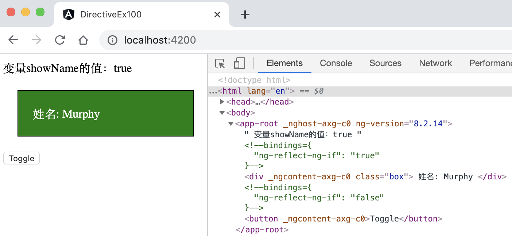
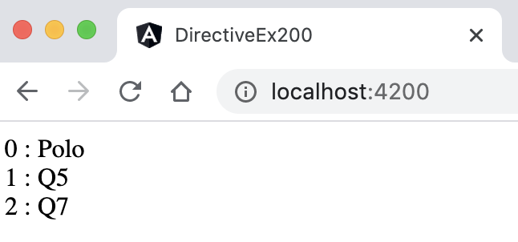
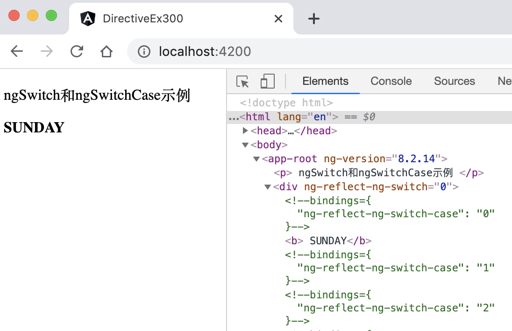
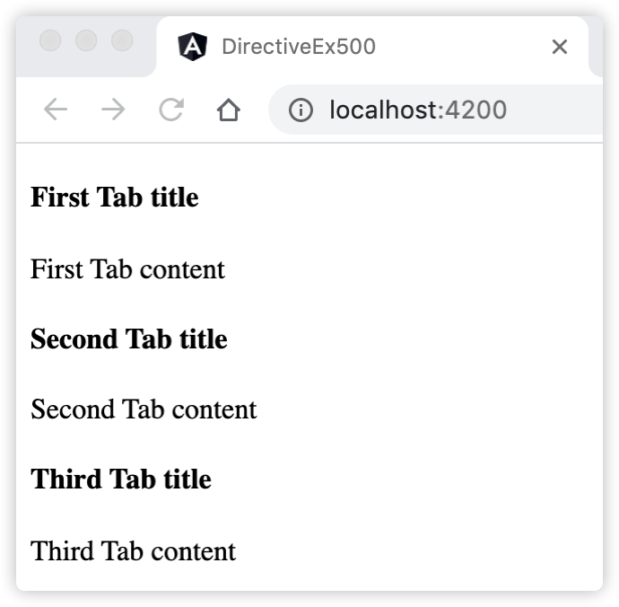
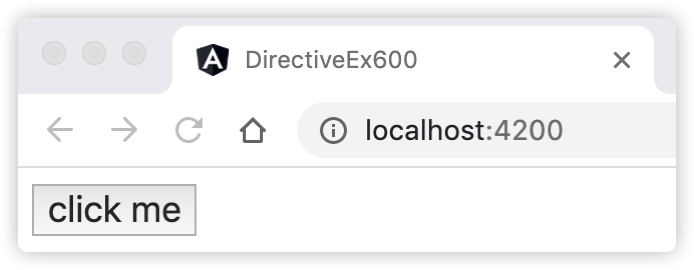

8 掌握Angular指令应用¶
指令是DOM元素上的标记（例如属性），它告诉Angular将指定的行为附加到现有元素。 指令的核心是一个函数，只要Angular编译器在DOM中找到指令，该指令就执行。Angular指令用于通过赋予其新语法来扩展HTML的功能。
在组件模板使用了指令，指令以不同的方式影响模板的输出。 某些指令可能会完全改变模板输出的结构。这些指令可以通过添加和删除视图DOM元素来更改DOM布局，我们称之为结构型指令。另一些指令可能只是改变一个DOM元素的外观或行为，我们称之为属性型指令。
Angular内置了许多指令来帮助用户进行编码。用户也可以自定义指令。
8.1 学习Angular结构型指令¶
结构型指令的职责是HTML布局。它们塑造或重塑DOM的结构，比如添加、移除或修改这些元素。 Angular中包含3个常用的内置结构型指令：NgIf，NgFor 和 NgSwitch。
8.1.1 学习NgIf指令¶
通过将NgIf指令应用在HTML元素上来从DOM中添加或删除元素。NgIf指令格式如： <div *ngIf="模板表达式" /> ，NgIf指令的模板表达式接受一个布尔值，如果值为true，元素里面的内容将显示在视图DOM中，如果值为false，元素里面的内容将不显示（从视图DOM中排除）。因此，NgIf指令用于包含或排除UI的元素，包括它的子元素。由NgIf排除的标记是没有生成的，不可见的，它根本不在DOM中。
下面通过示例演示使用NgIf指令来显示和隐藏元素。
8.1.2 [示例 directive-ex100] 演示使用NgIf指令来显示和隐藏元素¶
用Angular CLI构建应用程序，具体命令如下：
ng new directive-ex100 --minimal --interactive=false
启动服务，具体命令如下：
ng serve
查看应用程序结果。打开Web浏览器并浏览到 “http://localhost:4200”，应该看到文本 “Welcome to directive-ex100!”。
编辑组件。编辑文件src/app/app.component.ts，并将其更改为以下内容：
import { Component } from '@angular/core'; @Component({ selector: 'app-root', template: ` 变量showName的值：{{showName}} <div *ngIf="showName" class="box"> 姓名: Murphy </div> <div *ngIf="!showName" class="box"> 地址: 光谷 </div> <button (click)="toggle()">Toggle</button> `, styles: [`div.box { width: 200px;padding:20px;margin:20px; border: 1px solid black; color: white; background-color: green } `] }) export class AppComponent { showName: boolean = true; toggle() { this.showName = !this.showName; } }
观察应用程序页面，单击Toggle按钮，页面显示效果如图8-1所示。
图8-1 演示Class样式绑定
{kind=link}
在上面的示例directive-ex100中，完成了以下内容：
将NgIf指令应用在HTML元素的<div>标签上，它根据类属性showName的值来判断，显示姓名还是地址；
打开开发者模式，选择查看源代码，可以发现，当showName的值为false时，该<div>标签的值不在DOM中生成；
类中定义的toggle()方法与<button>标签绑定，负责每次点击时，对showName的值取反。
8.1.3 学习NgFor指令¶
NgFor是一个迭代指令，它通过使用可迭代的每个子项作为模板的上下文来重复渲染模板的一种方式。NgFor指令格式如： <div *ngFor='let item of items'>{{item.name}}</div> 。赋值给 *ngFor 的字符串不是模板表达式 。而是由Angular解释的一种小型语言。字符串 “let item of items” 的意思是：将items数组中的每个条目存储在局部循环变量item中，并使其可用于每次迭代的模板视图中。
NgFor指令对于生成重复内容很有用，例如客户列表，下拉列表等。迭代的每个项目都有其模板上下文中可用的变量，如表8-1所示。
内置变量 |
描述 |
|---|---|
item |
示例：ngFor =“let item of items” 中，item代表迭代的每个子项 |
index |
每个模板上下文的当前循环迭代的索引 |
last |
布尔值，指示项是否是迭代中的最后一项 |
even |
布尔值，指示当前索引是否是偶数索引 |
odd |
布尔值，指示当前索引是否是奇数索引 |
下面通过示例演示使用NgFor指令来显示一个列表。
8.1.4 [示例 directive-ex200] 演示使用NgFor指令来显示一个列表¶
用Angular CLI构建应用程序，具体命令如下：
ng new directive-ex200 --minimal --interactive=false
启动服务，具体命令如下：
ng serve
查看应用程序结果。打开Web浏览器并浏览到 “http://localhost:4200”，应该看到文本 “Welcome to directive-ex200!”。
编辑组件。编辑文件src/app/app.component.ts，并将其更改为以下内容：
import { Component } from '@angular/core'; @Component({ selector: 'app-root', template: ` <div *ngFor="let name of names; let i = index;"> <div>{{i}} : {{name}}</div> </div> `, styles: [] }) export class AppComponent { names = ['Polo', 'Q5', 'Q7']; }
观察应用程序页面，页面显示效果如图8-2所示。
图8-2 使用NgFor指令来显示一个列表
{kind=link}
在上面的示例directive-ex200中，完成了以下内容：
将NgFor指令应用在HTML元素的<div>标签上，它迭代并显示names数组的每个项目；
NgFor指令的内置变量索引是从0开始计数的；
8.1.5 学习NgSwitch指令¶
NgSwitch指令类似于JavaScript语言的switch语句。它根据切换条件显示几个可能的元素中的一个。Angular只会将选定的元素放入DOM。
NgSwitch 实际上是三个协作指令的集合： NgSwitch，NgSwitchCase 和 NgSwitchDefault，NgSwitch指令的格式如下：
<container-element [ngSwitch]="switch_expression"> <some-element *ngSwitchCase="match_expression_1">...</some-element> ... <some-element *ngSwitchDefault>...</some-element> </container-element>
从下面3个方面理解它们之间的关系：
NgSwitchCase指令和NgSwitchDefault指令都是结构型指令，因为它们会从DOM中添加或移除元素；
当NgSwitchCase指令的绑定值等于开关值（switch_expression）时，就将其元素添加到DOM中；否则从DOM中删除；
NgSwitchDefault指令会在没有任何一个NgSwitchCase的值被选中时把它所在的元素加入DOM中。
下面通过示例演示NgSwitch指令的应用场景。
8.1.6 [示例 directive-ex300] 演示使用NgSwitch指令显示星期几¶
用Angular CLI构建应用程序，具体命令如下：
ng new directive-ex300 --minimal --interactive=false
启动服务，具体命令如下：
ng serve
查看应用程序结果。打开Web浏览器并浏览到 “http://localhost:4200”，应该看到文本 “Welcome to directive-ex300!”。
编辑组件。编辑文件src/app/app.component.ts，并将其更改为以下内容：
import { Component } from '@angular/core'; @Component({ selector: 'app-root', template: ` <!-- ngSwitch and ngSwitchCase - enum example --> <p> ngSwitch和ngSwitchCase示例 </p> <div [ngSwitch]="day"> <b *ngSwitchCase="days.SUNDAY"> SUNDAY</b> <b *ngSwitchCase="days.MONDAY"> MONDAY</b> <b *ngSwitchCase="days.TUESDAY">TUESDAY</b> <b *ngSwitchCase="days.WEDNESDAY">WEDNESDAY</b> <b *ngSwitchCase="days.THURSDAY">THURSDAY</b> <b *ngSwitchCase="days.FRIDAY">FRIDAY</b> <b *ngSwitchCase="days.SATURDAY">SATURDAY</b> <b *ngSwitchDefault>No Days</b> </div> `, styles: [] }) export class AppComponent { days = Days; day = Days.SUNDAY; } export enum Days { SUNDAY, MONDAY, TUESDAY, WEDNESDAY, THURSDAY, FRIDAY, SATURDAY }
观察应用程序页面，页面显示效果如图8-3所示。
图8-3 演示使用NgSwitch指令显示星期几
{kind=link}
在上面的示例directive-ex300中，完成了以下内容：
定义一个枚举类（enum）Days，用于显示周日历；
[ngSwitch]指令绑定在类属性day上，day默认赋值为SUNDAY；
day的值与ngSwitchCase的值匹配时，显示当前匹配元素的内容，其他不匹配的，被DOM排除在外。
8.1.7 学习<ng-container>分组元素¶
Angular 的 <ng-container> 是一个分组元素，但它不会污染样式或元素布局，因为 Angular 压根不会把它放进 DOM 中。 <ng-container> 是一个由 Angular 解析器负责识别处理的语法元素。它不是一个指令、组件、类或接口，更像是 JavaScript 中 if 块中的花括号。 当没有合适的宿主元素时，可以使用<ng-container>对元素进行分组。
<ng-container>的使用场景之一是，在需要遍历或if判断时，它可以承担一个载体的作用：
<ul> <ng-container *ngFor="let item of items"> <li>{{ item.firstname }}</li> <li>{{ item.lastname }}</li> </ng-container> </ul>
8.2 学习Angular属性型指令¶
属性型指令用于改变一个DOM元素的外观或行为，Angular中包含4个常用的内置属性型指令：NgClass、NgStyle、NgControlName 和 NgModel。
8.2.1 学习NgClass内置指令¶
NgClass内置指令的作用是添加和删除一组CSS样式。NgClass内置指令语法支持3种格式的表达式：
使用空格分隔的字符串：[ngClass]=”is-info is-item has-border”
字符串数组：[ngClass]=”[‘is-info’, ‘is-item’, ‘has-border’]”
对象：[ngClass]=”{‘is-info’: true, ‘is-item’: true}”
上述例子是模板中声明的，[ngClass]可以绑定组件类中的属性，只要返回有效的表达式即可：
export class AppComponent { stringProperty = "is-info is-item has-border"; arrayProperty = ['is-info', 'is-item', 'has-border']; objectProperty = {'is-info': true, 'is-item': true}; }
然后修改模板中的表达式，使其绑定对应的属性即可：
[ngClass]="stringProperty" [ngClass]="arrayProperty" [ngClass]="objectProperty"
NgClass内置指令相比HTML特性绑定（[class.css-name]=”表达式”）来讲，支持多样格式，更加灵活。
8.2.2 学习NgStyle内置指令¶
NgStyle内置指令的作用是添加和删除一组Style样式。NgStyle内置指令接受一个键值对的对象表达式，键值对的键是一个样式属性。可以在键上添加一个前缀简化写法，如下面的写法：
[ngStyle]="{font-size.px: 15}" 等同于 [ngStyle]="{font-size: 15px}"
与NgClass内置指令类似，[ngStyle]同样可以绑定组件类中的属性，只要该类属性返回有效的表达式即可：
[ngStyle]="styler" // 模板中绑定类属性styler styler = { // 组件类中定义的属性styler [WIDTH]: "200", // 使用常量的写法，WIDTH是常量 "max-width.px": "600", // 硬编码的写法 "min-width.px": "200", "filter": "sepia(0)" }
使用NgStyle内置指令需要注意以下几点：
NgStyle内置指令接受键值对作为输入表达式，前提条件是键必须是有效的属性名称
NgStyle内置指令可以绑定组件类中的属性
NgStyle内置指令将会重写当前元素的内置样式
8.2.3 NgContent内置指令¶
NgContent内置指令的作用就是帮助开发人员创建可重用和可组合的组件。NgContent指令格式如： <ng-content></ng-content> 。 可以将ng-content标记理解为动态内容的占位符，在解析模板时，Angular将其替换为动态内容。Angular中称之为“内容投影”，意思是将内容从父组件投影到子组件中，子组件中包含NgContent指令。
NgContent内置指令类似插值表达式，不同之处在于插值表达式中的值来自组件类，而对于ng-content，其值来自组件的执行上下文。
假设要在应用中创建一个可重复使用的按钮，让我们先看一些代码，组件类大概是下面这样的：
import { Component } from '@angular/core'; @Component({ selector: 'app-add-button', template: ` <button (click)='add()' > 添加物资 </button> `, styles: [] }) export class AddButtonComponent{ add(){ alert('add-button'); } }
在上述组件类中，我们可以看到一个通用的添加按钮，单击该按钮即可触发事件。这里主要关注的是按钮的文字。文本“添加物资”在模板中是硬编码的，如果我们想换一个别的按钮文本该怎么办呢？例如“添加人员”。我们可以将该值替换为插值表达式，如下所示：
import { Component } from '@angular/core'; @Component({ selector: 'app-add-button', template: ` <button (click)='add()' > {{buttonText}} </button> `, styles: [] }) export class AddButtonComponent { buttonText: string = '添加人员' add() { alert('add-button'); } }
更进一步，我们可以将buttonText设置为@Input()装饰器声明的类属性，这样它可以接收来自父组件传入的值了。如下所示：
import { Component, Input } from '@angular/core'; @Component({ selector: 'app-add-button', template: ` <button (click)='add()' > {{buttonText}} </button> `, styles: [] }) export class AddButtonComponent { @Input() buttonText: string = '添加人员' add() { alert('add-button'); } }
然后在父组件中调用app-add-button组件，如下所示：
<app-add-button [buttonText]="'添加明细'" ></app-add-button>
这时，页面上的按钮文字已经变更成了来自父组件传入的文本“添加明细”。
上面介绍的方法是可行的，下面换成NgContent内置指令实现此功能。
8.2.4 [示例 directive-ex400] 演示使用NgContent指令创建可重用添加按钮组件¶
用Angular CLI构建应用程序，具体命令如下：
ng new directive-ex400 --minimal --interactive=false
启动服务，具体命令如下：
ng serve
查看应用程序结果。打开Web浏览器并浏览到 “http://localhost:4200”，应该看到文本 “Welcome to directive-ex400!”。
新增子组件。具体命令如下：
ng g c add-button
编辑子组件。编辑文件src/app/add-button/add-button.component.ts，并将其更改为以下内容：
import { Component, Input } from '@angular/core'; @Component({ selector: 'app-add-button', template: ` <button (click)='add()'> <ng-content></ng-content> </button> `, styles: [] }) export class AddButtonComponent { add() { alert('add-button'); } }
编辑父组件。编辑文件src/app/app.component.ts，并将其更改为以下内容：
import { Component } from '@angular/core'; @Component({ selector: 'app-root', template: ` <app-add-button> 添加明细 </app-add-button> `, styles: [] }) export class AppComponent { }
观察应用程序页面，页面显示一个“添加明细”按钮。
在上面的示例directive-ex400中，完成了以下内容：
在子组件中定义了一个按钮，同时绑定了一个单击事件，同时通过ng-content标签预留了一个占位符，用它来显示按钮文字；
父组件通过在标签<app-add-button>内传入文字内容，子组件中接收到文字，替换ng-content占位符；
通过上述示例，可以看出NgContent内置指令创建可重用的组件时提供了很大的遍历。它消除了我们在先前示例中使用的大量额外设置，没有要绑定的输入属性，组件中也没有硬编码的值，只需设置原始模板，然后在实际需要时类似HTML标签一样，嵌入要显示的文本。
动态文本只是应用NgContent内置指令的冰山一角，可以在组件内部放入许多不同的东西，包括HTML标记甚至其他组件。
8.2.5 @ContentChildren()装饰器中使用NgContent内置指令¶
@ContentChild()和@ContentChildren()装饰器是一起的，类似@ViewChild()和@ViewChildren()装饰器（参照本书前面章节）。 之所以要将@ContentChild()和@ContentChildren()装饰器放在本章讲解，是因为它们依赖NgContent内置指令的知识。更准确的说，必须要等读者了解NgContent内置指令的知识后，我们才能继续讲解@ContentChild()和@ContentChildren()装饰器的知识。
首先做个简单的介绍，@ContentChildren()装饰器与内容子节点有关，它是操作投影进来的内容。@ContentChildren()装饰器与@ViewChild()装饰器的区别是：@ViewChild()装饰器是与模板视图本身的子节点有关，它是操作模板自身的视图内容。
ContentChild和ContentChildren都是参数装饰器，分别用于从内容DOM中获取子元素或指令的查询对象（Query）和查询列表对象（QueryList）。每当添加或删除子元素/组件时，Query或QueryList都会更新。 子元素或指令的查询在组件的生命周期AfterContentInit发生时完成，因此在ngAfterContentInit()方法中，就能正确获取查询的元素。
让我们看一个利用@ContentChildren()装饰器查询子组件列表功能的示例。
8.2.6 [示例 directive-ex500] 演示使用@ContentChildren()装饰器查询子组件列表¶
用Angular CLI构建应用程序，具体命令如下：
ng new directive-ex500 --minimal --interactive=false
启动服务，具体命令如下：
ng serve
查看应用程序结果。打开Web浏览器并浏览到 “http://localhost:4200”，应该看到文本 “Welcome to directive-ex500!”。
新增子组件和父组件。具体命令分别如下：
ng g c tab ng g c tab-list
编辑子组件。编辑文件src/app/tab/tab.component.ts，并将其更改为以下内容：
import { Component, OnInit, Input } from '@angular/core'; @Component({ selector: 'app-tab', template: ` <h4>{{ tab.title }}</h4> <p>{{ tab.content }}</p> `, styles: [] }) export class TabComponent { constructor() { } @Input() tab: TabInterFace; // 输入属性 printTitle() { // 打印title属性 console.log(this.tab.title); } } // 定义一个Tab接口 interface TabInterFace { title: string; content: string; }
编辑父组件。编辑文件src/app/tab-list/tab-list.component.ts，并将其更改为以下内容：
import { Component, AfterContentInit, ContentChildren, QueryList } from '@angular/core'; import { TabComponent } from '../tab/tab.component'; @Component({ selector: 'app-tab-list', template: ` <p> <ng-content></ng-content> </p> `, styles: [] }) export class TabListComponent implements AfterContentInit { constructor() { } // 使用ContentChildren装饰器获取包含子组件TabComponent列表的QueryList @ContentChildren(TabComponent) tabList: QueryList<TabComponent>; ngAfterContentInit() { this.tabList.toArray()[0].printTitle(); // 调用列表的第1个子组件的printTitle()方法 } }
编辑组件。编辑文件src/app/app.component.ts，并将其更改为以下内容：
import { Component, OnInit } from '@angular/core'; @Component({ selector: 'app-root', template: ` <app-tab-list> <app-tab *ngFor="let tab of tabs" [tab]="tab"></app-tab> </app-tab-list> `, styles: [] }) export class AppComponent implements OnInit { tabs = []; ngOnInit() { this.tabs = [ { title: "First Tab title", content: "First Tab content" }, { title: "Second Tab title", content: "Second Tab content" }, { title: "Third Tab title", content: "Third Tab content" } ]; } }
观察应用程序页面，页面显示效果如图8-4所示。
图8-4 演示使用@ContentChildren()装饰器查询子组件列表
{kind=link}
在上面的示例directive-ex500中，完成了以下内容：
创建选项卡子组件TabComponent，TabComponent类中带有一个输入属性以及一个打印选项卡对象的title属性的方法；
创建父组件TabListComponent，其模板视图中使用NgContent内置指令，用来显示父组件投影进来的内容；
父组件TabListComponent使用@ContentChildren()装饰器获取包含子组件TabComponent列表的QueryList，该列表存储在组件类的tabList变量中；
父组件TabListComponent实现AfterContentInit生命周期接口，在接口的回调方法中获取到子组件TabComponent的QueryList列表对象，接着获取到列表的第1个元素（子组件TabComponent对象），最后调用该元素的printTitle()方法。
8.3 如何创建指令¶
指令和组件都是Angular对象，它们都对应于模板视图中的元素，并且可以修改生成的视图界面。
指令和组件一样，都有对应的Angular类，类都有构造函数。指令类用@Directive()装饰器声明。 @Directive()装饰器和@Component()装饰器类似，它接收的也是一个元数据对象，下表8-2中展示了一些最常用的@Directive()元数据的配置选项：
元数据配置选项 |
说明 |
|---|---|
selector |
对应的是HTML标签的属性名称，名称格式如[appSizer] |
inputs |
列举指令的一组可供数据绑定的输入属性 |
outputs |
列举一组可供事件绑定的输出属性 |
host |
使用一组键值对，把类的属性映射到宿主元素的绑定属性和事件 |
但是，指令和组件并不完全相同。例如，组件需要视图，而指令则不需要。指令没有模板，指令将行为添加到现有DOM元素上。
创建指令与创建组件类似，主要命令如下：
ng generate directive 指令名称 # 简写：ng g d 指令名称
如前所述，指令是DOM元素（例如属性）上的标记，它告诉Angular将指定的行为附加到现有元素。这意味着我们需要一种方法来访问应用该指令的DOM元素，以及修改DOM元素的方法。Angular为我们提供了两个非常有用的对象：ElementRef和Renderer2对象。
- ElementRef对象
可以通过ElementRef对象的nativeElement属性直接访问应用该指令的DOM元素。
- Renderer2对象
Renderer2对象实现自定义渲染器，它提供了许多辅助方法，如可以通过该对象修改DOM元素的样式。
我们可以将两者通过构造函数注入到指令类中，并使每个元素成为私有实例变量，代码如下：
constructor(private element: ElementRef, private renderer: Renderer2) { }
提示
关于依赖注入的知识，本书后续章节将会进行详细介绍。
8.3.1 如何在指令中访问DOM属性¶
在表8-2中，@Directive()装饰器元数据配置的host选项中提到了宿主元素，那么什么是宿主元素呢？
宿主元素（Host Element）的概念仅是针对组件和属性型指令来讲的。针对组件来说，组件的宿主元素对应的是组件在HTML中的标签元素。针对属性型指令来说，如果将指令放置在模板HTML中的某个元素上，那么该元素将成为该指令的宿主元素。如下有一个应用UserDetailComponent组件的HTML中的标签代码：
<user-detail log></user-detail>
<user-detail>是组件UserDetailComponent对应HTML中的标签，针对UserDetailComponent组件来说，<user-detail>标签元素就是该组件的宿主元素，针对log指令来说，log指令放置在<user-detail>标签元素上，那么<user-detail>标签元素就是log指令的宿主元素。
在表8-2中，@Directive()装饰器中的inputs元数据，它的值声明了指令的输入属性，装饰器通过inputs元数据将指令的输入属性与指令类的同名属性进行绑定。 我们通过示例演示inputs元数据的用法，创建一个简单的指令访问宿主元素的DOM属性，用于更改HTML元素的样式。
8.3.2 [示例 directive-ex600] 演示使用自定义指令更改按钮的大小¶
用Angular CLI构建应用程序，具体命令如下：
ng new directive-ex600 --minimal --interactive=false
启动服务，具体命令如下：
ng serve
查看应用程序结果。打开Web浏览器并浏览到 “http://localhost:4200”，应该看到文本 “Welcome to directive-ex600!”。
创建指令。具体命令如下：
ng g d log该命令执行后，将在当前目录下生成log.directive.ts文件。
编辑指令类。编辑文件src/app/log.directive.ts，并将其更改为以下内容：
import { Directive, OnInit, ElementRef, Renderer2 } from '@angular/core'; @Directive({ selector: '[log]', // HTML标签的属性名称 inputs : ['size'] // 绑定指令的输入属性 }) export class LogDirective implements OnInit { constructor(private element: ElementRef, private renderer: Renderer2) { } size: string; // 与元数据中的输入属性对应 ngOnInit() { this.renderer.setStyle(this.element.nativeElement, 'font-size', this.size); } }
编辑组件。编辑文件src/app/app.component.ts，并将其更改为以下内容：
import { Component } from '@angular/core'; @Component({ selector: 'app-root', template: ` <button log size=18px>click me</button> `, styles: [] }) export class AppComponent { title = 'directive-ex600'; }
观察应用程序页面，页面显示效果如图8-5所示。
图8-5 演示使用自定义指令更改HTML元素的字体大小
{kind=link}
在上面的示例directive-ex600中，完成了以下内容：
父组件模板中通过将log指令应用到<button>标签元素的属性上，因此，log指令的宿主元素就是<button>标签元素；
创建了一个log指令，@Directive()装饰器声明指令类，装饰器的元数据中接收一个selector属性，它的值（注意它的格式）作为宿主元素标签的属性名，因此log指令属于属性型指令；元数据中还包括inputs属性，它的值声明了指令的输入属性，装饰器通过inputs元数据将指令的输入属性与指令类的同名属性进行绑定；
指令类通过构造函数将ElementRef和Renderer2对象注入到指令类中，并使每个元素成为私有实例变量；
指令类实现OnInit生命周期接口，在ngOnInit()回调方法中调用Renderer2对象实例的setStyle()方法，修改宿主元素的样式，这里是将该宿主元素的字体大小设置为size值的大小，ElementRef对象有个nativeElement属性用来获取宿主元素的对象；
指令类中的size属性其实是一个输入型属性，与宿主元素中的size属性绑定，接收按钮字体的大小值；如果在@Directive()装饰器中省略inputs属性，那么指令类中的size属性需要用Input()装饰器进行声明，如下面的代码片段：
@Directive({ selector: '[log]', // HTML标签的属性名称 }) export class LogDirective implements OnInit { @Input() size: string; // 定义输入型属性，对应宿主元素中的size属性 // ……
8.3.3 如何在指令中监听事件¶
我们已经知道了Angular事件绑定的主要目的是监听组件模板中元素的事件。那么，现在如何在组件的宿主元素上监听事件呢？这正是本节将要介绍的内容。
上面我们学习了如何访问宿主元素的DOM属性，@Directive()装饰器中的inputs元数据用于绑定属性，它还有一个host元数据，用于绑定事件。下面我们通过示例讲解如何在指令中监听事件。
8.3.4 [示例 directive-ex700] 演示如何在指令中监听事件¶
用Angular CLI构建应用程序，具体命令如下：
ng new directive-ex700 --minimal --interactive=false
启动服务，具体命令如下：
ng serve
查看应用程序结果。打开Web浏览器并浏览到 “http://localhost:4200”，应该看到文本 “Welcome to directive-ex700!”。
创建指令。具体命令如下：
ng g d log该命令执行后，将在当前目录下生成log.directive.ts文件。
编辑指令类。编辑文件src/app/log.directive.ts，并将其更改为以下内容：
import { Directive, ElementRef, Renderer2 } from '@angular/core'; @Directive({ selector: '[log]', host: { // 绑定事件 '(click)': 'onClick($event)' } }) export class LogDirective { constructor(private elementRef: ElementRef, private renderer: Renderer2) { } count: number = 0 onClick(event: Event) { console.log('click', event); // 控制台打印出event模板变量信息 this.count += 1 console.log('counts', this.count) // 控制台打印出count值 const textContent = 'click me ' this.renderer.setProperty(this.elementRef.nativeElement, 'textContent', textContent + this.count.toString()); // 设置按钮的文本值 this.renderer.setStyle(this.elementRef.nativeElement, 'background-color', 'yellow'); // 设置按钮的背景颜色 } }
编辑组件。编辑文件src/app/app.component.ts，并将其更改为以下内容：
import { Component } from '@angular/core'; @Component({ selector: 'app-root', template: ` <button log>click me</button> `, styles: [] }) export class AppComponent { title = 'directive-ex700'; }
观察应用程序页面，单击页面按钮，进入开发者模式，同时查看控制台中打印的日志信息。
在上面的示例directive-ex700中，完成了以下内容：
创建了一个log指令类，@Directive()装饰器中host元数据是用来监听的宿主元素对象，host元数据接收一组键值对（key-value）数据，当key为属性时，对应的是宿主元素的DOM属性，value对应的是具体DOM属性的值；当key为事件名时，对应的就是监听宿主元素上的DOM事件，value对应的是处理的方法，装饰器通过host元数据将指令的触发事件与指令类中的方法进行绑定；
log指令类通过构造函数将ElementRef和Renderer2对象注入到指令类中，并使每个元素成为私有实例变量；
在根组件模板中，<button>标签元素中使用了log指令，这时，<button>标签元素就是log指令的宿主元素，当用户单击宿主元素（按钮）时，指令监听到对应的事件，触发处理方法，在控制台中打印出累加计数的信息，并修改按钮上的显示文字和背景色；
8.3.5 在指令中使用HostBinding绑定DOM属性¶
上面介绍了使用ElementRef对象的nativeElement属性来访问宿主元素，然后使用Renderer2对象操作其DOM属性。这么做需要额外的注入底层的ElementRef对象和Renderer2对象。其实，Angular提供了一种简单的绑定属性的实现方式，可以使用@HostBinding()装饰器绑定宿主元素上的DOM属性，从而可以处理DOM属性的值。
@HostBinding()装饰器仅接收1个元数据属性，格式如：
@HostBinding('hostPropertyName')
hostPropertyName表示绑定到宿主元素上的DOM属性。
我们在示例directive-ex600的基础上，改为使用@HostBinding()装饰器的代码。
8.3.6 [示例 directive-ex800] 演示在指令中使用HostBinding绑定DOM属性¶
用Angular CLI构建应用程序，具体命令如下：
ng new directive-ex800 --minimal --interactive=false
启动服务，具体命令如下：
ng serve
查看应用程序结果。打开Web浏览器并浏览到 “http://localhost:4200”，应该看到文本 “Welcome to directive-ex800!”。
创建指令。具体命令如下：
ng g d log
编辑指令类。编辑文件src/app/log.directive.ts，并将其更改为以下内容：
import { Directive, HostBinding, OnInit } from '@angular/core'; @Directive({ selector: '[log]', // HTML标签的属性名称 inputs: ['size'] // 绑定指令的输入属性 }) export class LogDirective implements OnInit { size: string; // 与元数据中的输入属性对应 @HostBinding('style.font-size') // 绑定宿主元素的字体样式属性 fontSize: string; @HostBinding('style.background-color') // 绑定宿主元素的背景样式属性 backgroundColor: string; ngOnInit() { console.log('绑定指令的输入属性 ' + this.size); this.fontSize = this.size; // 将字体大小更新size的值 this.backgroundColor = 'yellow'; // 将背景色更新为黄色 } }
观察应用程序页面，发现页面上的效果与示例directive-ex600相同。
在上面的示例directive-ex800中，完成了以下内容：
log指令类中使用@HostBinding()装饰器绑定宿主元素上的样式属性；
@HostBinding()装饰器声明的类属性名可以是任意命名。换句话说，@HostBinding()装饰器通过类属性名将元数据的信息与类属性的值进行绑定，这时类属性名仅充当了桥梁作用，因此，类属性名可以是任意命名，即上面示例中的fontSize和backgroundColor类属性名可以任意命名。
8.3.7 在指令中使用HostListener监听DOM事件¶
同样，Angular也提供了一种简单的绑定事件的实现方式，使用@HostListener()装饰器绑定宿主元素上的事件。
@HostListener()装饰器接收2个元数据属性，格式如：
@HostListener('eventName', ['$event'])
第一个元数据eventName属性是要监听的事件名，第二个元数据属性是选项参数，它是当该事件发生时传给组件类方法的一组参数。如果有多个参数，参数间以逗号分隔。让我们看一个使用@HostListener()装饰器监听指令中的DOM事件的示例。
8.3.8 [示例 directive-ex900] 演示监听单击事件并实现当点击时增加计数¶
用Angular CLI构建应用程序，具体命令如下：
ng new directive-ex900 --minimal --interactive=false
启动服务，具体命令如下：
ng serve
查看应用程序结果。打开Web浏览器并浏览到 “http://localhost:4200”，应该看到文本 “Welcome to directive-ex900!”。
创建指令。具体命令如下：
ng g d log
编辑指令类。编辑文件src/app/log.directive.ts，并将其更改为以下内容：
import { Directive, HostBinding, HostListener } from '@angular/core'; @Directive({ selector: '[log]' }) export class LogDirective { constructor() { } count: number = 0 @HostBinding('textContent') // 绑定宿主元素的文本属性 textContent: string = 'click me'; @HostListener('click', ['$event']) // 监听宿主元素的click事件 onClick(event: Event) { console.log('click', event); this.count += 1 console.log('counts', this.count) this.textContent = 'click me ' + this.count // 更新宿主元素上的文本内容 } }
编辑组件。编辑文件src/app/app.component.ts，并将其更改为以下内容：
import { Component } from '@angular/core'; @Component({ selector: 'app-root', template: ` <button log>click me</button> `, styles: [] }) export class AppComponent { title = 'directive-ex900'; }
观察应用程序页面，进入开发者模式，单击页面按钮，查看控制台显示打印日志信息。
在上面的示例directive-ex900中，完成了以下内容：
创建了一个log指令，使用@HostListener()装饰器监听宿主元素上的单击事件；
在组件模板中，在<button>标签中使用log指令，这时，<button>就是log指令的宿主元素，当用户单击宿主元素（按钮）时，控制台显示累加计数的信息；
组件类中@HostListener()装饰器声明onClick()方法上，该装饰器的元数据接收了2个参数，第一个参数是监听的单击事件名称，第二个选项参数是Angular提供了一个模板变量，它将当前宿主元素上的DOM事件对象传递给onClick()方法。
8.4 小结¶
本章分别介绍了Angular结构型指令和Angular属性型指令，在介绍NgContent内置指令之后，讲解了ContentChild和ContentChildren装饰器，最后介绍了创建自定义指令的相关知识。